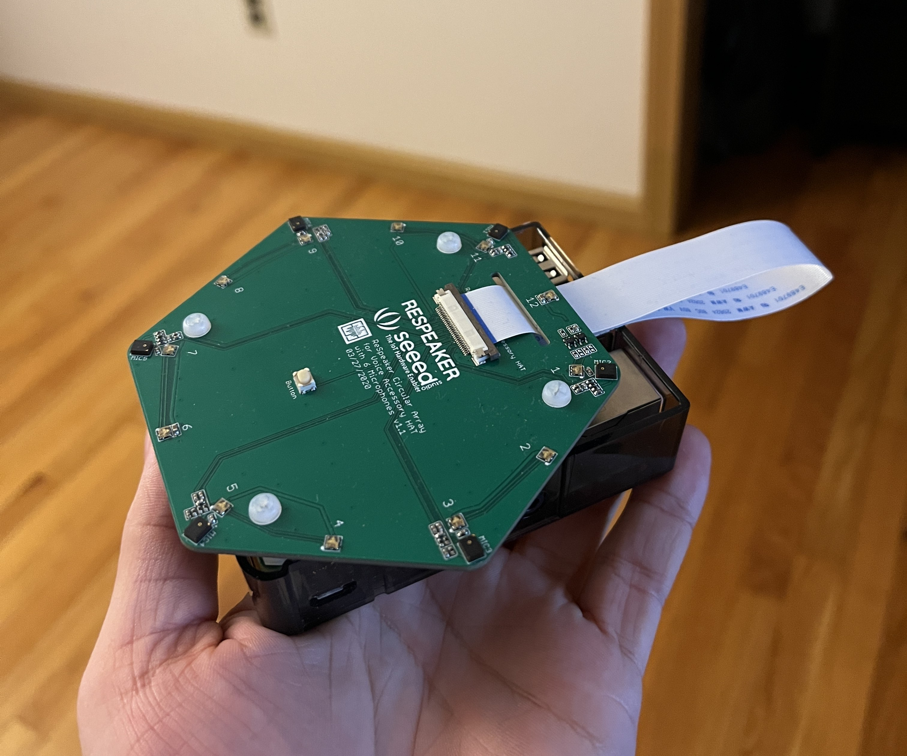
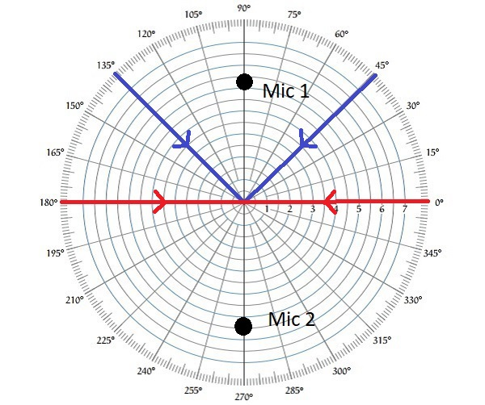
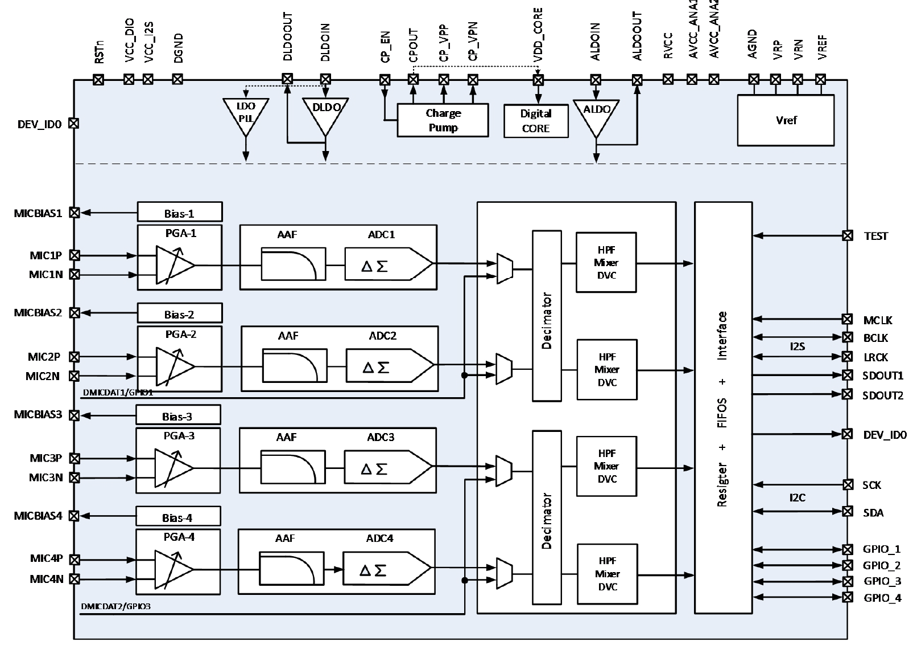
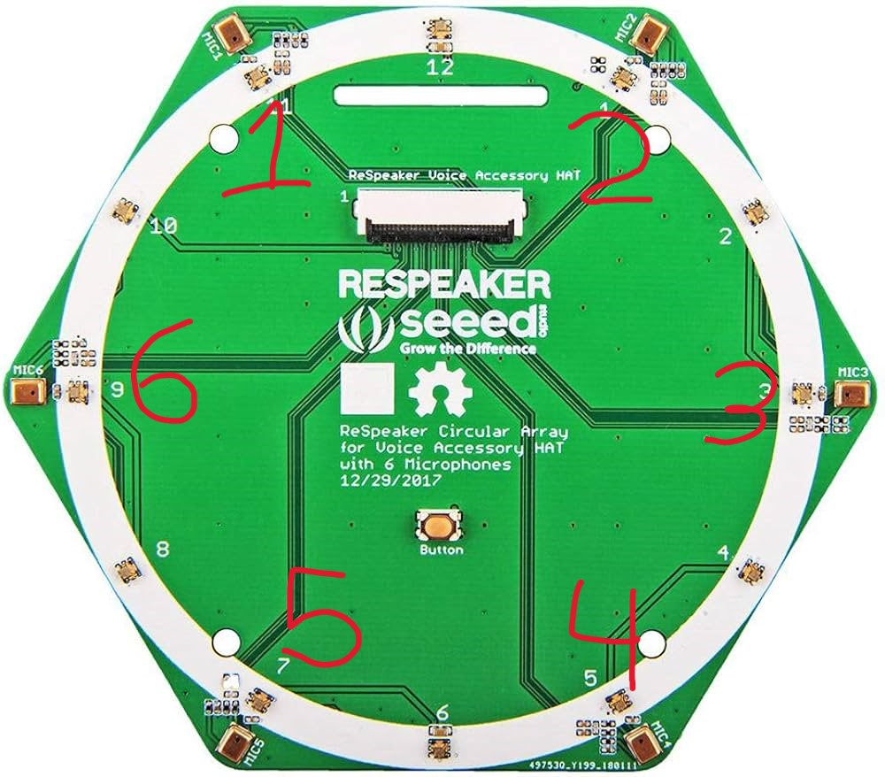
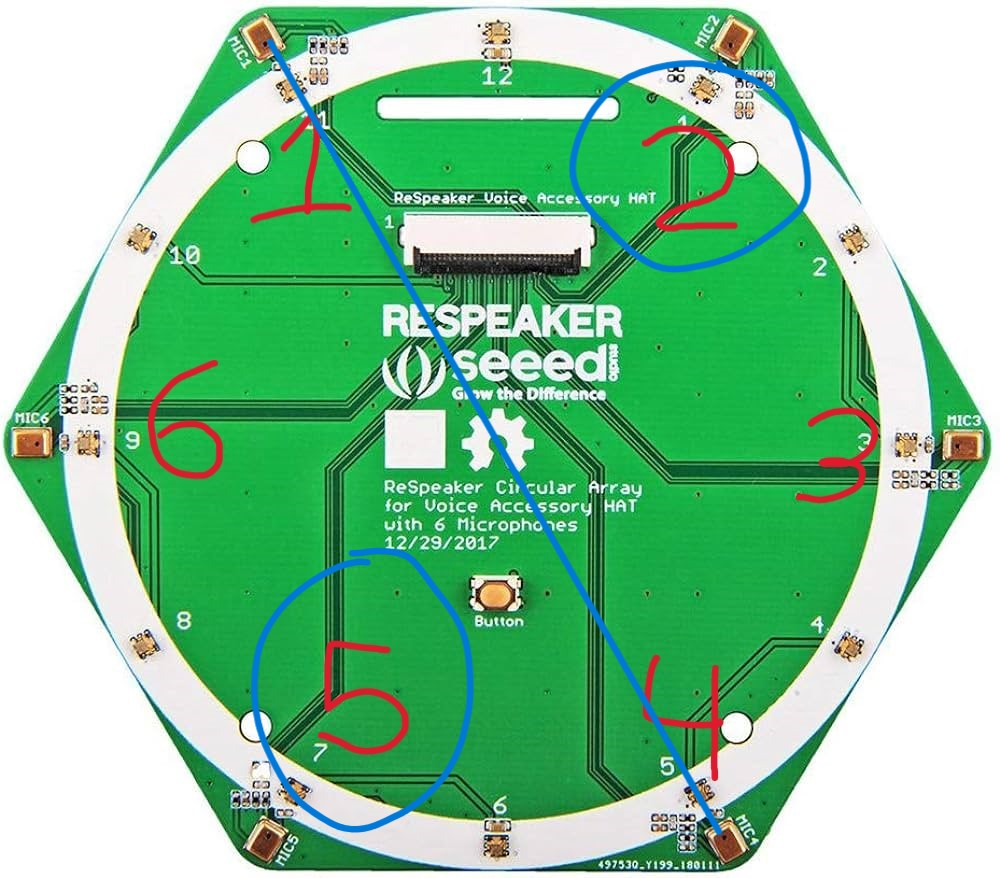

Callaghan Berry (myself); Role: Hardware Selection and Algorithm Implementation
Christina Liu; Role: Hardware Selection and Algorithm Implementation
Thalia Lightstone; Role: Software, Documentation, and Multimedia
Micheal Turner; Role: Software and Firmware
Caitlin Goldberg; Role: Project Manager
Introduction

Figure 1: Microphone Array
Hearing is one of the five senses in which humans use to interact with the world around us. We use it in conversation, in music and art, as well as a way to understand our spatial surroundings. Having two ears gives us the ability to perceive differences in sounds between ears, a concept called binaural hearing. Having two ears, or sensors as we will explore later, allows our brain to perceive volume and/or time of arrival differences in audio stimuli, and combine that information to determine audio directionality. This is an overlooked yet necessary key to many aspects of life. Imagine the danger of crossing a busy intersection without being able to hear an oncoming car? Even a more casual scenario such as a conversation in a restaurant can be cumbersome without spatial orientation. Those who suffer from hearing loss or impairment can struggle locating the sources of sounds, leaving them at a severe disadvantage. The use of hearing aids or cochlear implants provides some rectification for people who struggle with hearing loss, however these devices are not perfect. The costs and invasive surgeries often associated with these devices can limit users to one device, restricting the brains ability to discern direction. Even those who have access to two hearing aids or cochlear implants can have issues if the devices are not tuned properly.
Each year, students in Tufts University's Electrical and Computer Engineering Department form thesis teams to tackle problems and create prototypes. Our team, Team Periwinkle, set out to solve this audio directionality problem plaguing many hearing impaired communities. We first started by consulting members of hard of hearing communities to understand their experiences with audio directionality and get their feedback on potential solutions. The prevailing idea was to separate the task of audio direction tracking from the human brain by creating an electronic device that could present direction estimates to the user in real time. Direction can be defined in many ways, but for this project, we focused on the azimuthal angle of arrival. This angle lives on flat ground and is defined over 360 degrees relative to a person, with 0 degrees being directly in front. The realization of this solution takes advantage of an array of microphones. Similar to human hearing, a microphone array, or grouping of multiple microphones separated in space, allows us to record sounds at different points in space and use this information to estimate an angle of arrival. The microphone array and direction finding algorithms will be covered in the next few sections.
Microphone Array Setup
The angle estimate for angle of arrival (AoA) of an audio signal can be measured from a simple time delay. To explain this, we will use a simplified two microphone Uniform Linear Array (ULA), shown in the image below. Utilizing two microphones separated in space gives us the ability to measure the time delay of arrival between microphones, or TDoA.
Figure 2: Microphone Array Setup
First, lets define some terminology. The broadside angle refers to the angle that is perpendicular to the linear array geometry, or the line that the sensors live on. Angle estimates will be relative to this angle.
The two microphone array as shown above consists of two sensors, \(\tau\) and Mic 2, separated by a distance \(d\). Sound waves travel at a constant speed of 343m/s in dry air, assuming no dispersion. If we imagine a sound wave emitted from some source impinging on our microphone array from the left, as shown, then that wave will first be recorded by Mic 1 and then by Mic 2 some time later. The time it takes for the sound to travel between Mic 1 and Mic 2 can be related by the separation distance \(d\), speed of sound \(v\), and angle of arrival relative to broadside \(\beta\) by the equation:
\[ \tau = \frac{d \sin(\beta)}{v} \]
where \(\tau\) is the time delay or lag between microphones. From this we can see that if one were to know the time lag between microphone sources recording the audio source, they could calculate the angle of arrival using this array.
One limitation of this method that the angle estimate from this array is slightly ambiguous. Imagine a signal arriving from 0 degrees off broadside. Then imagine a signal arriving from behind the array at 180 degrees off broadside. The time delay between these two angles of arrival is the same. Similarly, a signal arriving from 45 degrees off broadside and another from 135 degrees will also appear the same, since the signal will travel the same distance between microphones 1 and 2.

Figure 3: Polar Plot of Angle of Arrival.
This phenomena is a limitation of any linear array. A simple way to rectify this is to use 2 dimensional arrays of sensors which can give a more unambiguous estimate of the azimuthal angle of arrival, as well as provide information about elevation if desired. The microphone array employed in this project that we will explore in the next section is a 2 dimensional circular array, which allows us to estimate a single angle rather than an ambiguous cone. The angle estimate is sometimes referred to as the "cone angle" rather than angle of arrival, as the grouping of ambiguous signals for one angle estimate form a triangle in 2D space, like in blue above, or a cone if concerned with 3D space.
Hardware
Tufts Senior Capstone Projects are constrained to two semesters, with the first largely taken up by forming teams, finding problems, and making proposals. This left really only one semester to work on implementations of solutions. Due to this time constraint, our team elected to use off the shelf hardware rather than design our own microphone array from scratch. There are many off the shelf microphone arrays available from a variety of companies that interface with a variety of hardware, but we landed on a product from Seeed Technology; the ReSpeaker 6 Mic Circular Array. Link to product page.
Figure 4: ReSpeaker Array
The ReSpeaker is a 6 Microphone circular array, as seen above. Here are the hardware specifications taken directly from the datasheet:
2 x X-Power AC108 ADC
6 x high performance microphones
1 x X-Power AC101 DAC
Voice output: 3.5mm headset audio jack, speaker jack
Compatible with Raspberry Pi 40-pin headers
Microphones: MSM321A3729H9CP
Sensitivity: -22 dBFS (Omnidirectional)
SNR: 59 dB
Max Sample Rate: 48kHz
We chose this design from Seeed for a variety of reasons. First, it had the ability to integrate with a Raspberry Pi microprocessor. The ReSpeaker is a breakout board that communicates with the pi through the pi's onboard GPIO pins. All of the audio capture is handled by the dedicated audio breakout board and the data is then passed to the pi for processing. This device also had an array of 12 LEDs that could be lit to indicate estimated direction of arrival. Though a dedicated audio processor would have been better for this application, the Raspberry Pi was more than capable for our needs, and allowed us to better hit our timeline through relatively low learning curve. Raspberry Pi's can run versions of Linux, so programming and package installations is fairly easy, and there is a lot of documentation to work off of. For coding the device, any firmware or drivers were written in C, with the signal processing code being written in Python.
Figure 5: ReSpeaker Hardware Block Diagram
Another important area is the analog front end and analog to digital conversion section. The range of audio frequencies that humans can hear is about 20Hz to 20kHz. This frequency range drives the required sampling rate of our device. Audio exists as an analog signal in the air. In order to be processed by a computer using Digital Signal Processing, DSP, it must first be digitized. The process of converting an analog signal to a digital signal involves sampling the analog signal at discrete intervals, known as the sampling period. The sampling rate is how many samples are taken each second. According to Nyquist's Sampling Theorem, any periodic signal must be sampled at greater than or equal to twice the maximum frequency component of that signal. This is to prevent aliasing, in which frequencies higher than half the sampling rate will be interpreted as lower frequencies and wrap around on top of lower frequencies, causing distortion. The Nyquist sampling rate for an audio signal is roughly 40kHz. Our hardware supports up to a 48kHz sampling rate, making it a good choice for audio applications, at least in a sampling sense. Unfortunately, we ran into a firmware problems getting the board to sample at 48kHz and ended up using a 16kHz sampling rate instead. The AC108 ADCs support a variety of sampling frequencies and have included anti-aliasing filters built into the front end that prevent aliasing of frequencies higher than Nyquist, so this ended up not being much of a problem. Additionally, speech and music signals end up being largely below 1kHz anyway, so most of the spectral content is sufficiently captured.

Figure 6: AC108 Block Diagram
Time Delay Estimation: GCC-PHAT
For this project, our team elected to use a Time Delay Estimation method to compute the angle of arrival. The angle of arrival is directly proportional to the time delay measured between microphones as shown above, so this method can provide an accurate way to compute angle of arrival. There are many ways to calculate time delay between two microphone inputs, but in this project we will explore a method called cross-correlation, specifically the Generalized Cross-Correlation Phase Transform (GCC-PHAT).
Cross-correlation is a measure of similarity between two datasets as a function of time shifts. Basically, we take two datasets and see how much similar they are, and then shift one of the datasets in time and look at the similarity again, doing this for until the signals no longer overlap. Mathematically, this is equivalent to multiplying two signals together, and then taking the expectation, for every possible shift amount. This can be useful for determining the lag between signals received by two different sensors. We can model a single audio source captured by two microphones with two equations:
where \(s(t)\) is the signal emitted from the audio source, \(\alpha\) is a scaling or attenuation factor, and \(n_1(t)\) and \(n_2(t)\) are assumed to be uncorrelated noise vectors. The signal in \(x_2(t)\) has a time delay \(\tau_0\) applied to it due to the delay introduced over the propagation path. An important assumption made here, and a limitation in operation, is that the cross-correlation algorithms assume a single source. Their behavior with multiple sources is undefined and any angle estimates in the presence of multiple sources could be incorrect. We see that each sensor signal is really just a time shifted version of the other plus noise. If we were to correlate these two signals, we would find that if the \(x_2(t)\) were shifted forward in time by \(\tau_0\), the signals would end up being highly correlated, assuming the Signal to Noise Ratio, SNR, is high enough, meaning the signal s(t) is much stronger than the noise. Here is the math:
In the above equations, \(R_{x_1,x_2}(\tau)\) is the cross-correlation as a function of an applied time shift \(\tau\), \(\mathbb{E}\) is the mathematical expectation operator, and \(\hat{\tau_0}\) is the estimate of the time delay \(\tau_0\). The estimate \(\hat{\tau_0}\) is the time delay that maximizes our cross-correlation function.
What we have talked about so far is "regular" cross-correlation. The "generalized" approach uses weighting functions to sharpen the peak of our cross-correlation function in order to get a better, more accurate time delay estimate. The Phase Transform (PHAT) is one of those weighting methods. The PHAT transform involves weighting the cross power spectrum, or the frequency domain realization of the cross-correlation, by the magnitude of the spectrum. The phase transform is applied in the frequency domain.
we then take the maximum of our cross correlation function, which after the PHAT weighting is a simple dirac delta function.
\[\hat{\tau_0} = arg max(\delta(\tau-\tau_0)) = \tau_0\]
Figure 7: Recorded and Delayed Audio
Now, let's apply this to an example audio recording. The audio recording used is of human speech, recorded with a sample rate of 22.05kHz. The top plot shows the original recording amplitude vs. time. The bottom plot shows the same recording zero padded with 2205 samples to mimic a 10ms time delay between channels. In reality the time delay would not manifest as zero padding rather some noise would be present, but this example yields a nice result. Let's call the original recording the reference, and the delayed recording the test signal. If we pass these two signals to the GCC-PHAT algorithm defined above, we would get the resulting cross-correlation plot vs time.
The resulting peak of the cross-correlation function is found at 2205 samples, or 10ms if we convert sample number to time using the sample rate. The negative sign refers to the fact that the test signal needed to be shifted backward 2205 samples to line up with the reference. If we instead applied the delay to the reference, we'd get a positive sample delay.
Now, to convert from time delays to angle of arrival, we only need to remember our earlier equation relating the time delay to angle of arrival through our array geometry. The actual implementation in hardware looks largely the same as the math above, however, we take advantage of multiple microphone pairs to remove the angle ambiguity.
Implementation
The implementation of the GCC-PHAT algorithm mostly follows the math outlined above. However, since we have more than two microphones, the angle estimation looks a little different. Here is a visual of our microphone setup.

Figure 9: Respeaker Mic Pairs
To remove the angle ambiguity, we will be using the 6 available microphones on our board rather than just 2. For this project, we used the opposing microphone pairs. The pairs we used were 1-4, 2-5, and 3-6. First, we compute the time delays associated with each microphone pair using GCC-PHAT, using the first microphone listed in each pair as the reference. Each microphone pair forms a linear array along a different azimuth axis, thus we have three different time delays to work from. We estimate the angle of arrival from the array pair with the smallest absolute time delay (delays can be positive or negative relative to reference), using our sin formula from earlier, this time solving for \(\beta\).
\[\beta = \arcsin(\frac{tau \cdot v}{d})\]
We chose to estimate the angle from the pair with the smallest absolute time delay to ensure that we can use the remaining pairs to remove the angle ambiguity. Remember that for a linear array, the angle estimate limited to a range of [-90, 90] degrees. This corresponds to sources in front of the array, but sources can also be present behind the array. To figure out if sources are in front of or behind a given microphone pair, we can look at the time delays estimated by the remaining array pairings. Looking at our array setup, after we chose one microphone pair to do our angle estimation, the other two pairs each have one microphone in front of the the estimation pair, and one behind it.

Figure 10: Front-Back Pairs
For example, if we estimate the angle using microphones 1 and 4, the adjacent microphone 2-5 pair would place microphone 2 in front of array 1-4, and microphone 5 behind it. Then, if we have an estimate for an angle of arrival using microphone pair 1-4, we can check if the time delay estimated from pair 2-5 is positive, corresponding to a source behind the array, or negative, corresponding to a source in front of the array (this may seem backwards but that how our GCC implementation is set up). For this method to work, the time delay of the second microphone pair can't be 0, we need a positive OR a negative time delay to figure out if the source is in front of behind. The case of a 0 sample time delay between microphones occurs when the source arrives perfectly at broadside to one of the linear arrays. However, only one of the three array pairings will estimate a 0 sample delay at any one time, as each of the array pairings are set up on different azimuth angle axis. This if we always do our angle estimation from the pair with a 0 sample time delay between microphone elements, the other two pairs will always have a non-zero time delay, allowing us to remove the angle ambiguity. Choosing the pair with the smallest absolute time delay will always captures the 0 time delay case, and keeps things consistent for the cases when the source is not at broadside to any of the angle pairs.
The final step in this process is to translate all the angle estimates back to the device/user's perspective. For this project, we chose our 0 degree reference point to be directly in front of the device, between microphones 1 and 2. Thus, we simply had to apply a rotation to the angle estimate given by each of our microphone pairs by adding or subtracting the angle that the chosen pair is defined along from the reported angle estimate, modulo 360. The angle estimates are then printed to terminal, and each of the 12 LEDs is coded to light up for a given range of angle estimates to give some visual indication of the sources location.
And that's it! There are some more nuance details about how audio is captured and how the code is organized, but for the most part this explains the project and how things worked. We also increased the number of IFFT points in our implementation of the GCC algorithm to increase the time delay and thus angle estimate resolution according to []. All of the papers referenced are listed in the references section below, and any continuations of the project that I make after graduation will be listed in other project pages. Thanks so much for reading along!
References
[1] Charles H. Knapp, G. Clifford Carter. 1976. The Generalized Correlation Method for Estimation of Time Delay. IEEE Transactions on Acoustics, Speech, and Signal Processing, Vol. ASSP-24, No. 4
[2] Fadhil Zuandi, Mareska Pratiwi Maharani, Wansu Lim. 2018. Performance Comparison Between Steered Response Power and Generalized Cross Correlation in Microphone Arrays for Sound Source Localization. ARPN Journal of Engineering and Applied Sciences, Vol. 13, No. 9
[3] Francois Grondin, James Glass. 2018. A Study of the Complexity and Accuracy of Direction of Arrival Estimation Methods Based on GCC-PHAT for a Pair of Close Microphones. arXiv:1811.11787